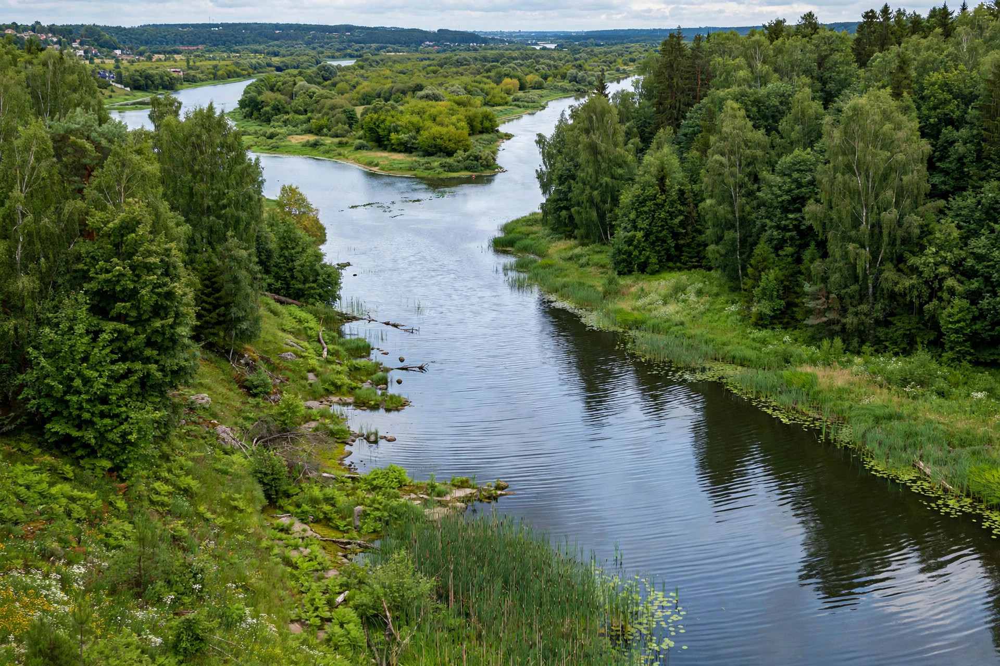

| Nemunas | |
|---|---|
| Countries | Belarus, Lithuania, Russia |
| Length | 914 km (568 mi) |
| Source | Minsk Upland, Belarus |
| Mouth | Curonian Lagoon, Baltic Sea |
The Nemunas (German: Memel; Polish and Russian: Neman; Belarusian: Nyoman) is a major river of eastern Europe and the longest river lying within Lithuania. It rises in Belarus south of Minsk and flows about 914 km westward and northward through Grodno and the Lithuanian cities of Alytus and Kaunas before reaching the Baltic Sea.

From its source in the Minsk Upland, the Nemunas flows west through Belarus, then forms parts of the borders between Lithuania and Belarus and, in its lower course, between Lithuania and Russia's Kaliningrad Oblast. At Kaunas it is joined by its largest tributary, the Neris. Below Kaunas the river meanders through a broad floodplain to its delta at Rusnė, where it divides into distributaries (chiefly the Atmata and Skirvytė) emptying into the Curonian Lagoon.
The Nemunas has long been a trade and transport artery and holds a central place in Lithuanian culture and song; historically the city of Memel (now Klaipėda) stood near its mouth. The Kaunas Hydroelectric Power Plant, completed in 1960, created the Kaunas Reservoir, the largest artificial lake in Lithuania. The Nemunas Delta Regional Park protects the river's marshy delta, an important bird habitat.